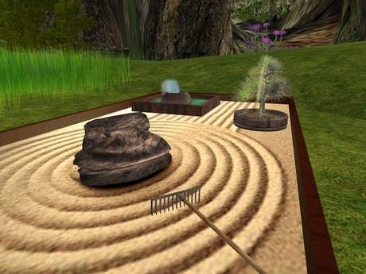
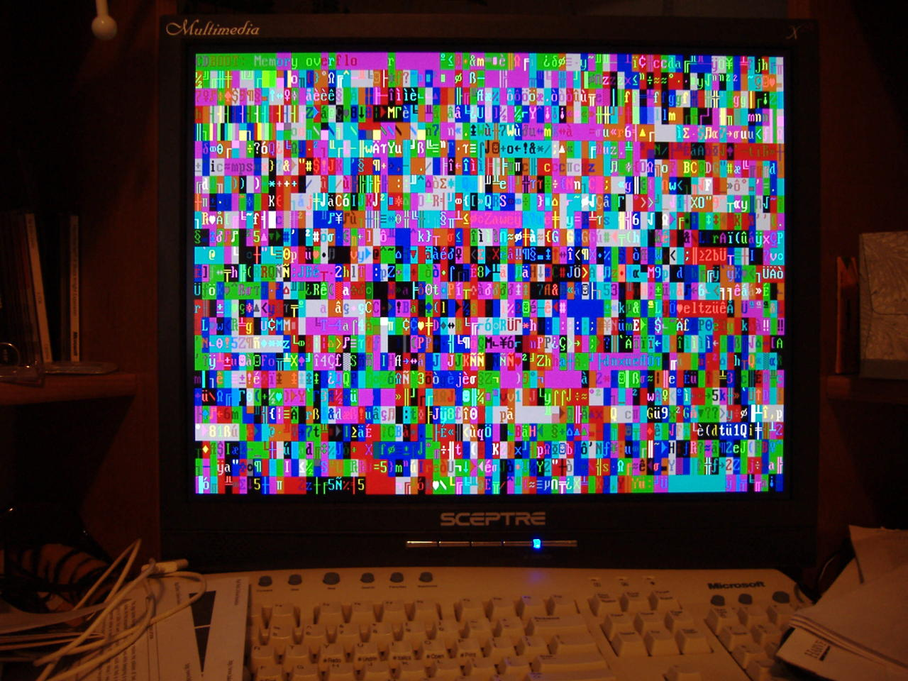
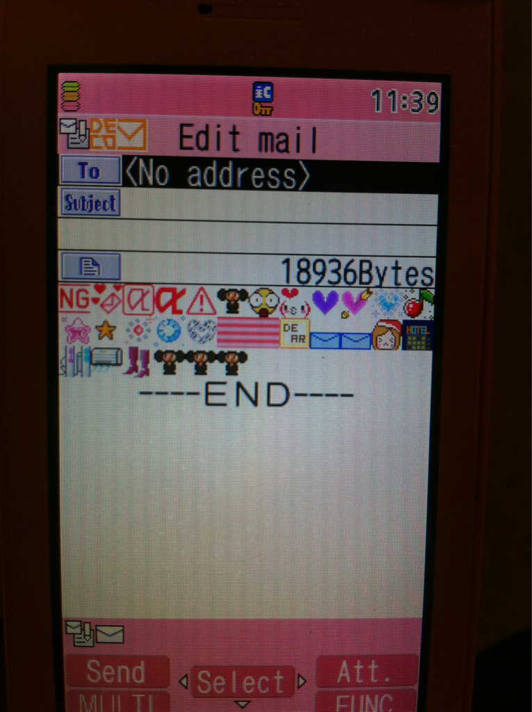

original url http://www.geocities.com/Area51/Keep/1559/
last modified 2000-10-12 05:29:08

original url http://www.geocities.com/Area51/Keep/1559/
last modified 2000-10-12 05:29:08


wOrkbeNcH SSeTa v0.6 (26.1, 26.7), V0.7 (27.3), 0.9 (29.2)
Workbench ßeta v0.6 (26.1, 26.7), v0.7 (27.3), 0.9 (29.2)ßeta phase: August 1985 –
Features:
Came with some unusual commands in the c: directory:
DiskEd - AmigaDOS Disk Editor version 3.2, binary disk editor
Download - download version 2.1, Sun->Amiga transfer utility
DumpObj - Displays executable hunks in hex
Frags - Displays free memory size distribution (fragmentation)
ObjDump - See DumpObj (appears to be an identical copy—oversight?)
ReadPrefs - Load preferences data from :config/preferences
SetPrefs - Preferences editor (similar to 1.x), “Edit Pointer” is ghosted
Wack - Wack version 27.001, debugger, marked “For Internal Use Only”
Included narrator.device and translator.device, but no means for end-user produced speech (i.e. “Say” command)
Bundled with the first Electronic Arts demo for the Amiga, which crashes horribly a few seconds into the demo since this demo is known to be incompatible with the A500/A2000.
Included printer support for the following drivers:
alphacom_pro101
brother_hl-15xl
cbm_epson
diablo_630
diablo_adv_D25
diablo_c-150
epson
epson_jx
mps_1000
okimate_20
qume_ltrpro_20
Came supplied with Textcraft development version 1.5 (6/24/85), and GraphiCraft V27 release 06 by Arktronics Corporation (see screenshots below).

AmiGA OCtaMEd soUNdsTUDiO PLayiNG a moduLE




My computer from 10 years ago, after the RAM (or maybe the mobo?) went bad. Each time I booted, it did something different. @windowshighasfuck


